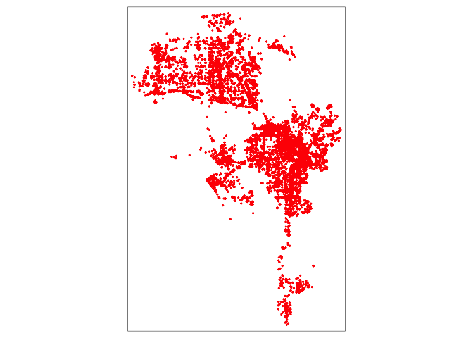
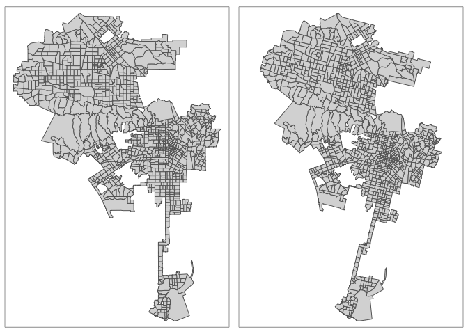
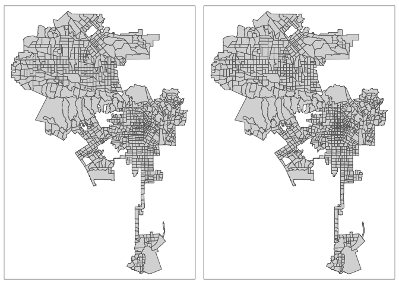
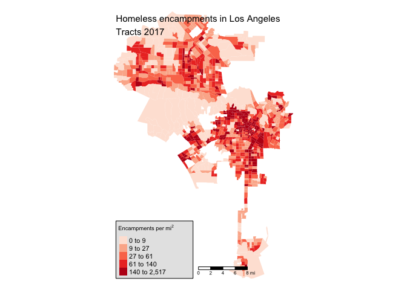

Lab 3: Point Data
CRD 298 - Spatial Methods in Community Research
Professor Noli Brazil
January 23, 2019
In Lab 2, we covered how to work with polygon data in R. In this lab, we will cover how to cover point data in R. The objectives of this guide are
- Understand Coordinate Reference Systems
- Learn how to reproject spatial data
- Learn how to create point buffers
- Learn how to calculate point distances
Installing and loading packages
You’ll need to install the following packages in R. You only need to do it once, so if you’ve already installed these packages, skip the code. Also, don’t put these install.packages() in your R Markdown document. Copy and paste the code in the R Console.
install.packages("matrixStats")You’ll need to load the following packages. Unlike installing, you will always need to load packages whenever you start a new R session. You’ll also always need to use library() in your R Markdown file.
library(sf)
library(tidyverse)
library(units)
library(tmap)
library(matrixStats)Bringing in point data
Point objects represents entities (e.g. buildings, trees) or events (e.g. crimes, vehicle collisions). Often you will receive point data in tabular form. If you have point longitudes and latitudes (or X and Y coordinates), you have all the information you need to make the data spatial. This process involves using geographic coordinates (longitude and latitude) to place points on a map. In some cases, you won’t have coordinates but street addresses. Here, you’ll need to geocode your data, which involves converting street addresses to geographic coordinates. These tasks are intimately related to the concept of projection and reprojection, and underlying all of these concepts is the Coordinate Reference System. These topics will be covered using the wonderful City of Angeles as our case study.
Longitude/Latitude
You may receive a point data set in tabular form with geographic coordinates. Geographic coordinates are in the form of longitude and latitude, where longitude is your X coordinate and spans East/West and latitude is your Y coordinate and spans North/South.
Let’s bring in a csv data set of homeless encampments in Los Angeles City, which was downloaded from the Los Angeles City Open Data portal. I uploaded the data set on GitHub so you can directly read it in using read_csv()
homeless311.df <- read_csv("https://raw.githubusercontent.com/crd150/data/master/homeless311_la_2017.csv")The data represent homeless encampment locations in 2017 as reported through the City’s 311 system. We will use the function st_as_sf() to create a point sf object of homeless311.df. The function requires you to specify the longitude and latitude of each point using the coords = argument, which are conveniently stored in the variables longitude and latitude.
homeless311.sf <- st_as_sf(homeless311.df, coords = c("longitude", "latitude"))Plot homeless encampments using functions from the tmap package, which we learned in Lab 2.
tm_shape(homeless311.sf) +
tm_dots(col="red")## Warning: Currect projection of shape homeless311.sf unknown. Long-lat
## (WGS84) is assumed.## Warning: unknown projection
We got a map and it looks right. But, we did get two warnings. These warnings aren’t something to sneeze at - the second one in particular is troubling, as it tells us that we haven’t set a projection, which is no problem if we’re just mapping, but is no bueno if we want to do some analyses on these point locations.
Coordinate Reference System
The Coordinate Reference System (CRS) is an important concept to understand when dealing with spatial data. We won’t go through the real nuts and bolts of CRS, which you can read in GWR Chapters 2.4 and 6, but we’ll go through enough of it so that you can get through most CRS related spatial data wrangling tasks. Please also read the document Coordinate_Reference_Systems.pdf on Canvas in the Week 2 Lab folder.
The CRS contains two major components: the Geographic Coordinate System (GCS) and the Projected Coordinate System (PCS). A GCS uses a three-dimensional spherical surface to define locations on the earth. The GCS can be further separated into two parts: the ellipse and the datum. The ellipse is a model of the Earth’s shape. The datum defines the coordinate system of this model - the origin point and the axes. You need these two basic components to place points on Earth’s three-dimensional surface. Think of it as trying to create a globe (ellipse) and figuring out where to place points on that globe (datum).
The PCS then translates these points from a globe onto a two-dimensional space. We need to do this because were creating paper (or flat screen) maps, not globes (or 3-D models).
You can find out the CRS of a spatial data set using the function st_crs(), which is in the sf package.
st_crs(homeless311.sf)## Coordinate Reference System: NA
When we used st_as_sf() above, we did not specify a CRS. We should have. Working with spatial data requires both a Geographic Coordinate System (so you know where your points are on Earth) and a Projection (a way of putting points in 2 dimensions). Both. Always. Like Peanut Butter and Jelly. Like Sonny and Cher. Like Ashton Kutcher and Demi Moore.
There are two ways of specifying a coordinate system in R: via the EPSG numeric code or via the PROJ4 formatted string. The EPSG code may not always be available for a particular coordinate system, but if a spatial object has a defined coordinate system, it will always have a PROJ4 projection string.
The PROJ4 syntax consists of a list of parameters, each separated by a space and prefixed with the + character. To specify the PCS, you use the argument +proj=. To specify the GCS, you use the arguments +ellps= to establish the ellipse and +datum= to specify the datum.
How do we know which CRS to use? The most common datums in North America are NAD27, NAD83 and WGS84, which has the ellipsoids clrk66, GRS80, and WGS84, respectively. The datum always specifies the ellipsoid that is used, but the ellipsoid does not specify the datum. This means you can specify +datum= and not specify +ellps= and R will know what to do, but not always the other way around. For example, the ellipsoid GRS80 is also associated with the datum GGRS87, so if you specify ellps=GRS80 without the datum, R won’t spit out an error, but will give you an unknown CRS.
When you are bringing in point data with latitude and longitude, the projected coordinate system is already set for you. Latitudes and longitudes are X-Y coordinates, which is essentially a Plate Carree projection. You specify a PCS using the argument (in quotes) +proj=longlat.
homeless311.sf <- st_as_sf(homeless311.df, coords = c("longitude", "latitude"), crs = "+proj=longlat +datum=WGS84")As we discussed in Lab 2, the CRS should have spaces only in between +proj=longlat and +datum=WGS84 (and other definitions) and no other place. What is the CRS now?
st_crs(homeless311.sf)## Coordinate Reference System:
## EPSG: 4326
## proj4string: "+proj=longlat +datum=WGS84 +no_defs"As you can see here, the EPSG associated with this particular GCS and PCS combination is 4326. Had we looked this up here, we could used crs = 4326 instead of "+proj=longlat +datum=WGS84" in the st_as_sf() command above.
The takeaway point: Always establish the CRS for all spatial data sets you bring into R. This includes not only situations where you need to convert nonspatial into spatial data like we did above, but also in situations where you bring in spatial data whose CRS has not been established. That is, a spatial data set you downloaded from a source that did not establish a CRS. Bring it into R, check the CRS using st_crs(), if you get an NA, set the CRS. To do this, use the function st_set_crs(). See GWR 6.1 for more details.
Reprojection
The above section deals with a situation where you are establishing the CRS for the first time. However, you may want to change an already defined CRS. This task is known as reprojection. Why would you want to do this? There are three main reasons:
- Two objects that are compared or combined have a different CRS.
- Aesthetic purposes and/or to correct distortions.
- Many geometric functions require certain CRS.
Reason 1: When you are working with two or more spatial data sets (i.e. doing analyses that connect the two data sets), you need to make sure their CRS are the same. This is similar to making sure that units are the same when measuring volume or distances. R is (semi) smart, so when you map two spatial data sets with different CRS, it will convert one to the other for mapping purposes, so everything looks peachy keen. But, don’t be fooled - they still have different CRS. When you try to do spatial operations and analyses that require connecting the two objects, such as finding the distance between two objects, R will either blow up or give you incorrect results.
Reason 2: Another reason why you may need to change the CRS is when you need to correct distortions or produce maps that are “visually correct”. To illustrate this point, let’s bring in the files la.city.nhgis.shp and la.city.tigris.shp, which provide Los Angeles City boundaries downloaded from different sources - one from the package tigris and the other downloaded from the National Historical Geographic Information System (NHGIS). For your convenience, I uploaded these shapefiles into a zip file on GitHub. Set your working directory to a folder you want to work out of. Download the file and unzip it using the following code.
setwd("insert your pathway here")
download.file(url = "https://raw.githubusercontent.com/crd230/data/master/lab3.zip", destfile = "lab3.zip")
unzip(zipfile = "lab3.zip")Bring in the tigris and NHGIS boundary files using our friend st_read()
la.city.tigris <- st_read("lacity_tigris.shp")
la.city.nhgis <- st_read("lacity_nhgis.shp")Check the CRS of both boundary files
st_crs(la.city.tigris)## Coordinate Reference System:
## EPSG: 4269
## proj4string: "+proj=longlat +datum=NAD83 +no_defs"st_crs(la.city.nhgis)## Coordinate Reference System:
## No EPSG code
## proj4string: "+proj=aea +lat_1=29.5 +lat_2=45.5 +lat_0=37.5 +lon_0=-96 +x_0=0 +y_0=0 +datum=NAD83 +units=m +no_defs"We find that they have different CRS. Let’s map the two boundaries side by side. I used the function tmap_arrange() from the tmap package to do this
lacity1 <- tm_shape(la.city.tigris) +
tm_polygons()
lacity2 <- tm_shape(la.city.nhgis) +
tm_polygons()
tmap_arrange(lacity1, lacity2)
You see a tilt for the NHGIS boundary map on the right. That tilt is not due to our bad eyesight or anything wrong in our code. It’s due to the projection system that NHGIS uses for their shapefiles, which is Albers Equal Area (aea). Figure 1 shows maps of the United States by different projection systems, including Albers Equal Area (top left)

Figure 1: U.S. Projection Coordinate Systems
You’ll see that under Albers Equal Area, California tilts. Hence, Los Angeles will tilt. In this case, AEA may be better for maps of the entire U.S. or for certain parts of the country (e.g. Midwest).
To fix the tilt, let’s change the la.city.nhgis CRS to the la.city.tigris CRS, which has a PCS of longlat. We use the function st_transform() to accomplish this task. I extract the CRS of la.city.tigris using st_crs() and specify that directly into the crs argument.
la.city.nhgis.tr <-st_transform(la.city.nhgis, crs = st_crs(la.city.tigris)) Now, no more tilt!!
lacity1 <- tm_shape(la.city.tigris) +
tm_polygons()
lacity2 <- tm_shape(la.city.nhgis.tr) +
tm_polygons()
tmap_arrange(lacity1, lacity2)
Reason 3: Many of R’s geometric functions that require calculating distances (e.g. distance from one point to another) or areas require a standard measure of distance/area. The spatial point data of homeless encampments are in longitude/latitude coordinates. Distance in latitude/longitude is in decimal degrees, which is not a standard measure. We can find out the units of a spatial data set by using the st_crs() function and calling up units as follows
st_crs(homeless311.sf)$units## NULLst_crs(la.city.tigris)$units## NULLNot good. We can reproject the encampments and Los Angeles City boundaries to a CRS that handles standard distance measures such as meters or kilometers. The Universal Transverse Mercator (UTM) coordinate system works in meters. It splits the country into zones so that you can get appropriate (non titling) maps of your specific region. The zones are shown in Figure 2

Figure 2: UTM Zones
Southern California looks like it’s in Zone 11. So, let’s reproject la.city.tigris and homeless311.sf to a UTM Zone 11 projection using the function st_transform(). We’ll need to specify an additional parameter in the CRS - the zone, which is +zone=11N for Los Angeles, where 11N stands for the Northern Hemisphere (there are UTM zones in the Southern Hemisphere). You don’t need to specify the “N” as R is smart enough to know, but it’s good to specify it to be technically correct.
la.city.tigris.utm <-st_transform(la.city.tigris,
crs = "+proj=utm +zone=11N +datum=NAD83 +ellps=GRS80")
homeless.sf.utm <- st_transform(homeless311.sf,
crs = "+proj=utm +zone=11N +datum=NAD83 +ellps=GRS80") Check the units
st_crs(la.city.tigris.utm)$units## [1] "m"st_crs(homeless.sf.utm)$units## [1] "m"“m” means meters.
Note that you cannot change the CRS if one has not already been established. For example, you cannot use the function st_transform() on homeless311.sf if you did not establish the CRS when you used st_as_sf() on homeless311.df.
Geocoding
If you have a data set of street addresses, you’ll need to convert those addresses to geographic coordinates. This process is known as geocoding. There are numerous ways to geocode in R. And there are many online services you can use (most paid, some free up to a certain limit). I cover geocoding street addresses in the mini lab located here.
Working with point data
Now we know how to spatialize point data in R. Other than mapping them, what can we do with point locations? We’ll cover three common point data operations (1) Count how many points are in each polygon; (2) Create buffers around points; and (3) Calculate distances between points
Points in polygon
One of the simplest analyses we can do with point data is to examine the distribution of points across an area. When working with neighborhoods, we can examine point distributions by summing up the number of points in each neighborhood. To get the count of homeless encampments by census tract, we need to use the function aggregate(), which is a part of the sf package. The code below tells R to sum up the number of points homeless.sf.utm in la.city.tigris.utm identifying each point by its unique ID “srnumber”. The argument FUN indicates how we want to summarize the points located in each polygon. We specify length for summing up the number of points.
la.city.tigris.utm.sum <- aggregate(homeless.sf.utm["srnumber"],
by = la.city.tigris.utm, FUN = length) %>%
replace(is.na(.), 0)
View(la.city.tigris.utm.sum)The column srnumber in the resulting table indicates the number of homeless encampments in each tract. The function aggregate() assigns an NA value to a tract if no encampments are found in that tract. That’s why we included the command replace(is.na(.), 0), which tells R to replace any NA values with a 0. Notice that la.city.tigris.utm.sum does not have the other variables from la.city.tigris.utm. We’ll have to join la.city.tigris.utm.sum back to la.city.tigris.utm. Because we’re joining two sf objects, we’ll use the function st_join() as we covered in Lab 2. Let’s also rename the variable srnumber to something more descriptive (hcamps)
la.city.tigris.utm <- la.city.tigris.utm %>%
st_join(la.city.tigris.utm.sum, join=st_equals, left=FALSE) %>%
rename(hcamps = srnumber)We can map the count of encampments by census tract, but counts do not take into consideration exposure. In this case, tracts that are larger in size will likely have more encampments. Let’s calculate the number of encampments per area.
To calculate the number of encampments per area, we’ll need to get the area of each polygon, which we do by using the function st_area(). The default area metric is kilometers squared, but we can use the function set_units() from the units package to set the unit of measure to (the U.S. friendly) miles squared value = mi2. Use these functions within mutate() to create a new column containing each tract’s area.
library(units)
la.city.tigris.utm<-mutate(la.city.tigris.utm,area=set_units(st_area(la.city.tigris.utm), value = mi2))Then calculate the number of homeless encampments per area.
la.city.tigris.utm<-mutate(la.city.tigris.utm,harea=hcamps/area)Let’s create a choropleth map of encampments per area.
tm_shape(la.city.tigris.utm, unit = "mi") +
tm_polygons(col = "harea", style = "quantile",palette = "Reds",
border.alpha = 0, title = expression("Encampments per " * mi^2)) +
tm_scale_bar(position = c("left", "bottom")) +
tm_style("natural", title = "Homeless encampments in Los Angeles\nTracts 2017", title.size = 0.95, frame=FALSE)
Point proximity buffers
Buffer analysis is used for identifying areas surrounding geographic features. The process involves generating a circle with a radius r around existing geographic features. Buffer analysis is a form of distance analysis. In this case, you connect other features to the points based on whether they fall inside or outside the boundary of the buffer. Let’s detect whether homeless encampments tend to be clustered near certain types of schools. We’ll create buffers around each school and count the number of encampments located within the buffers.
I included in the Zip file you downloaded earlier a point shapefile containing locations of public Elementary, Middle, and High schools. I’ve already reprojected the file into UTM Zone 11.
schools.utm <- st_read("Schools_LAUSD.shp")The first task is to create buffers of radius r around each school. The size of the buffer radius depends on the city you are examining and the context of your question. In this case, let’s use 150 meter buffers, which is the average size of a city block.
We use the sf function st_buffer() to create buffers. The required arguments are your sf object and the distance. Remember that the units for UTM is meters, so specifying dist = 150 means 150 meters.
sch.buff <-st_buffer(schools.utm, dist = 150)
sch.buffYou’ll see that sch.buff is a polygon object like a census tract. To be clear regarding what a buffer is, let’s extract one school, Camino Nuevo High School (ID 438), and its 150 meter buffer.
ex1 <- filter(sch.buff, ID == "438")
ex2 <- filter(schools.utm, ID == "438")And let’s map it onto tracts with the encampments.
ex.map<-tm_shape(la.city.tigris.utm) +
tm_polygons() +
tm_shape(homeless.sf.utm) +
tm_dots(size = 0.01) +
tm_shape(ex1) +
tm_borders(col="red") +
tm_shape(ex2) +
tm_dots(col = "red")
tmap_mode("view")
ex.map The school we are mapping is located in the middle right of the city. If you zoom in (Figure 3), you’ll see that the school is right in the middle of the buffer. The radius of this buffer is 150 meters, and we find that there are 18 encampments located within 150 meters of the school
Figure 3: 150 meter buffer
One operation we can do using these buffers is to count the number of encampments located within the buffers. Remember that sch.buff is a polygon. Counting the number of encampments inside a buffer is a points-in-polygons operation, which we already did above using the aggregate() function.
temp<-aggregate(homeless.sf.utm["srnumber"], sch.buff, length) %>%
replace(is.na(.), 0)We’ll have to join the object we get from aggregate() back to the buffer.
sch.buff <- sch.buff %>%
st_join(temp, join=st_equals, left=FALSE) %>%
rename(hcamps = srnumber)We can then use summarize() to find the mean number of encampments that occur within 150 meters.
sch.buff %>%
summarize(mean = mean(hcamps, na.rm=TRUE))## Simple feature collection with 1 feature and 1 field
## geometry type: MULTIPOLYGON
## dimension: XY
## bbox: xmin: 347440.4 ymin: 3731259 xmax: 393248.4 ymax: 3798213
## epsg (SRID): NA
## proj4string: +proj=utm +zone=11 +ellps=GRS80 +units=m +no_defs
## mean geometry
## 1 1.82772 MULTIPOLYGON (((379800.9 37...There are on average 1.8 encampments within 150 meters of public schools in Los Angeles. What about by type of school?
table1 <- sch.buff %>%
group_by(MPD_DESC) %>%
summarize(mean = mean(hcamps, na.rm=TRUE))
st_geometry(table1) <- NULL
table1## # A tibble: 3 x 2
## MPD_DESC mean
## * <fct> <dbl>
## 1 Elementary School 1.75
## 2 High School 1.66
## 3 Middle School 2.46On average, Middle schools average about 2.5 homeless encampments within a 150 meter distance.
Distances to encampments
We limit ourselves a bit by capturing encampments just within a radius distance. Why not calculate the distance to all encampments and summarize that distribution? We can get descriptive statistics such as the mean or nearest distance to an encampment.
To calculate the distance (in meters) from each school in schools.utm to each encampment homeless.sf.utm we use the function st_distance()
school.dist<-st_distance(schools.utm, homeless.sf.utm)For the object school.dist, the rows represent the schools and the columns are the encampments You can check this by comparing dimensions
#number of schools is 694
dim(schools.utm)## [1] 694 19#number of camps is 25621
dim(homeless.sf.utm)## [1] 25621 32#694 by 25621
dim(school.dist)## [1] 694 25621So, we have a distance matrix. That is we have each tract’s distance to each encampment. What is the distance to the closest encampment. We can use the function rowMins() in the package matrixStats to accomplish this.
The function rowMins() does exactly what you think it would do - get the minimum value across columns for each row. For school.dist, this means we get the minimum distance to an encampment for each neighborhood. Run this function within mutate() to save the resulting value in our main data set schools.utm
schools.utm <- mutate(schools.utm, hcampmin = rowMins(school.dist))We can then use summarize() to find the mean minimum distance to encampments.
schools.utm %>%
summarize(meanmin = mean(hcampmin, na.rm=TRUE))## Simple feature collection with 1 feature and 1 field
## geometry type: MULTIPOINT
## dimension: XY
## bbox: xmin: 347590.4 ymin: 3731409 xmax: 393098.4 ymax: 3798063
## epsg (SRID): NA
## proj4string: +proj=utm +zone=11 +ellps=GRS80 +units=m +no_defs
## meanmin geometry
## 1 262.913 MULTIPOINT (347590.4 378621...What about by type of school?
table2 <- schools.utm %>%
group_by(MPD_DESC) %>%
summarize(meanmin = mean(hcampmin))
st_geometry(table2) <- NULL
table2## # A tibble: 3 x 2
## MPD_DESC meanmin
## * <fct> <dbl>
## 1 Elementary School 274.
## 2 High School 239.
## 3 Middle School 242.The closest reported homeless encampment to a High school in Los Angeles in 2017 is on average 239 meters. Wow! Homeless encampments is an issue in Los Angeles (and many large cities out West). For example, check this article out.
Website created and maintained by Noli Brazil